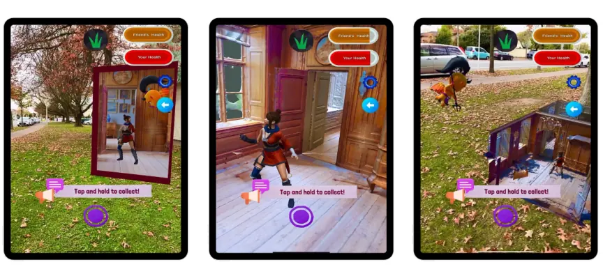

Connecting remote players through multiplayer AR
How do you make two people in different places feel like they're playing in the same room? Three years of research-through-design at HIT Lab NZ produced an answer — and a set of design guidelines any AR team can use.
The problem
Most location-based AR games treat AR as an optional visual layer: players can switch it off and the game barely changes. That works for collecting creatures on a street corner, but it falls apart when the point is to connect people who are physically apart. The question was how augmented reality could make meaningful use of the real world to support synchronous play between remote players.
What I did
I designed, built and evaluated a series of multiplayer AR games in iterative cycles, each study sharpening the next:
- Study 1 — 30 participants. Compared three ways of showing a remote room in AR: an Overlay at real-world scale, a Window portal, and a detached Tabletop miniature.
- Study 2 — 60 participants. A remote multiplayer AR hide-and-seek game, compared against playing in the same place.
- Study 3 — 38 participants. Interactive core mechanics: real-time object manipulation, particle-effect feedback and time pressure.

What we found
- Overlay produced the strongest sense of “being there”; Window felt like the remote place extending into your own; Tabletop gave a detached, strategic overview.
- AR changed how people played: players used mid-air and vertical space, and a lightweight cue showing where the remote player was looking strengthened social connection — without avatars or video.
- Interactive AR mechanics deepened strategic search and engagement, when paired with clear feedback and well-calibrated constraints.
If people in different places need to share one experience — remote training, tourism and heritage, family play, distributed teams — the same principles tell you what to render, what to leave out, and where AR genuinely earns its place. Read the AR Design Playbook, or start with an XR Opportunity Sprint.